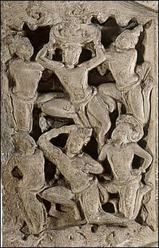

Raising of Crown
Siddhartha was born into a royal family and lived as a prince until he was a young adult. This scene shows Siddhartha's royal headdress being lifted and taken away by flying devas. This action symbolizes Siddhartha's rejection of his princely life so that he could pursue a greater spiritual understanding of the world. |